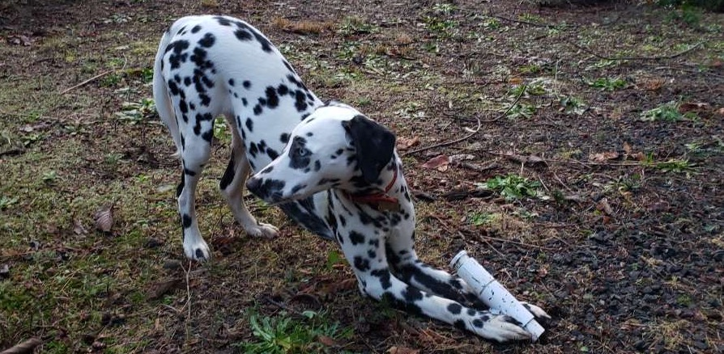

There are so many options when it comes to toys. Knowing your dog and whether or not they have the right toys will really benefict both you and the dog. If they are heavy chewers and teething they will need stronger and more durable toys. One great brand for tough teeth is KONG. They have differnt durability levels for their toys to fit what your dog needs. When you need to get work done it can be very beneficial for your dog to stay occupied with a toy.
